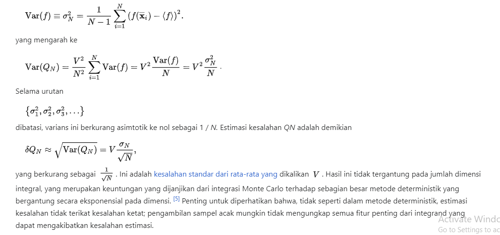

Metode Integral Monte Carlo¶
Integral merupakan topik dalam kalkulus yang banyak diaplikasikan pada matematika
maupun pada bidang-bidang lainnya terutama untuk pengembangan ilmu fisika maupun teknik.
Perhitungan integral tentu fungsi kontinu pada selang tertutup termasuk dalam permasalahan
deterministik. Model-model deterministik telah banyak dikembangkan untuk menyelesaikan
permasalahan perhitungan integral tentu fungsi kontinu pada selang tertutup. Beberapa model
tersebut antara lain adalah: Metode Romberg, Metode Trapesium, Metode Persegi Panjang dan
metode – metode yang lain. Metode-metode tersebut termasuk dalam algoritma komputasional
yang menggunakan proses deterministik karena menghasilkan keluaran yang pasti (bahkan
bisa juga sama), setiap kali proses perhitungan dijalankan. Perhitungan integral yang termasuk
permasalahan deterministik dapat juga diselesaikan dengan menggunakan pendekatan
stokastik, salah satunya dengan menggunakan Metode Monte Carlo.
Metode Monte Carlo (atau Percobaan Monte Carlo) merupakan salah satu kelas dalam
algoritma komputasional yang menggunakan pengambilan sampel secara random untuk
menghasilkan penyelesaian permasalahan. Metode Monte Carlo termasuk dalam model
stokastik karena dikerjakan dengan menggunakan bilangan-bilangan random dan statistik
probabilitas untuk menyelesaikan permasalahan-permasalahan. Metode Monte Carlo dapat
juga digunakan untuk menyelesaiakan permasalahan-permasalahan pada bidang ekonomi,
fisika, matematika maupun bidang-bidang yang lain.

Contoh Soal¶
soal nomer 3 adalah membuat program yang mana adalah implementasi dari monte carlo. dibawah ini adalah code programnya.
from scipy import random
import numpy as np
import matplotlib.pyplot as plt
a = 0
b = 2
N=2500
def func(x):
return (4-x**2)**0.5
area = []
for i in range(N):
xrand = np.zeros(N)
for i in range(len(xrand)):
xrand[i] = random.uniform(a,b)
integral = 0.0
for i in range(N):
integral+=func(xrand[i])
jawab = (b-a)/float(N)*integral
area.append(jawab)
plt.title("Nilai phi")
plt.hist(area,bins = 30, ec = 'black')
plt.xlabel("Area")
plt.show()
Pada tiga baris pertama berfungsi untuk menginport library pada python. variabel a adalah batas bawah integral sedangkan variabel b merupakan batas atas integral dan variabel N adalah jumlah angka random yang akan kita coba ke dalam fungsi. def func(x):... mengandung fungsi integral dalam soal. main program terdapat dalam baris area=[] hingga baris area.append(jawab). perulangan program akan dilakukan sebanyak N dengan memilih angka acak antara angka 0-2 dengan menggunakan for i in range(len(xrand[i])):... . kemudian semua hasil dari nilai komulatif fungsi akan ditampung dalam variabel integral. nilai phi akan dibuktikan dengan rumus monte carlo yakni (b-a)/N*integral. pada python untuk membuat diagram bisa menggunakan library matplotlib.pyplot. fungsi tersebud dijalankan menggunakan method pada code 4 baris terakhir dalam program. disini coba kita run program dan membuktikan berapa nilai phi sebenarnya.
Percobaan pertama.

Nilai phi menunjukkan senilai (3.1614507791715107)
Percobaan kedua.
nilai phi menunjukkan senilai (3.136555632439774)
Percobaan ketiga.
Nilai phi menunjukkan senilai(3.1260746164911244)
Kesimpulannya,setelah dilakukan 3 kali percobaan nilai phi mendekati 3.14.
Soal nomer 4 membuat program untuk menyelesaikan integral lipat tiga. dibawah ini adalah code untuk programnya.
from scipy import random
import numpy as np
a = -1
b = 1
N=100
n=3
xrand=np.zeros(N)
yrand=np.zeros(N)
zrand=np.zeros(N)
integral=0.0
for i in range(n+1):
for i in range(len(xrand)):
xrand[i]=random.uniform(a,b)
for i in range(len(yrand)):
yrand[i]=random.uniform(a,b)
for i in range(len(zrand)):
zrand[i]=random.uniform(a,b)
def func(x,y,z):
return (x**2)+(y**2)+(z**2)
for i in range(N):
integral+=func(xrand[i],yrand[i],zrand[i])
jawab=(b-a)/float(N)*integral
print("Hasil : ",jawab)
Untuk programnya hampir sama dengan soal nomer 3 hanya saja ditambahkan variabel y dan z. Sehingga untuk mencari angka randomnya juga ditambahkan kedalam program. Dibawah ini terdapat 3 percobaan yang sudah saya lakukan.
Percobaan
gambar diatas terdapat 5 kali percobaan menunjukkan nilai antara 7.4-8.4. mari kita bandingkan dengan analisis secara manual pada gambar dibawah ini.
Kesimpulan dari hasil analitis dan menggunakan program jawabannya hampir menekati. tergantung banyaknya angka yang diinputkan. semakin banyak jumlah N dalam monte carlo maka semakin sedikit estimasi erornya. Terima kasih.